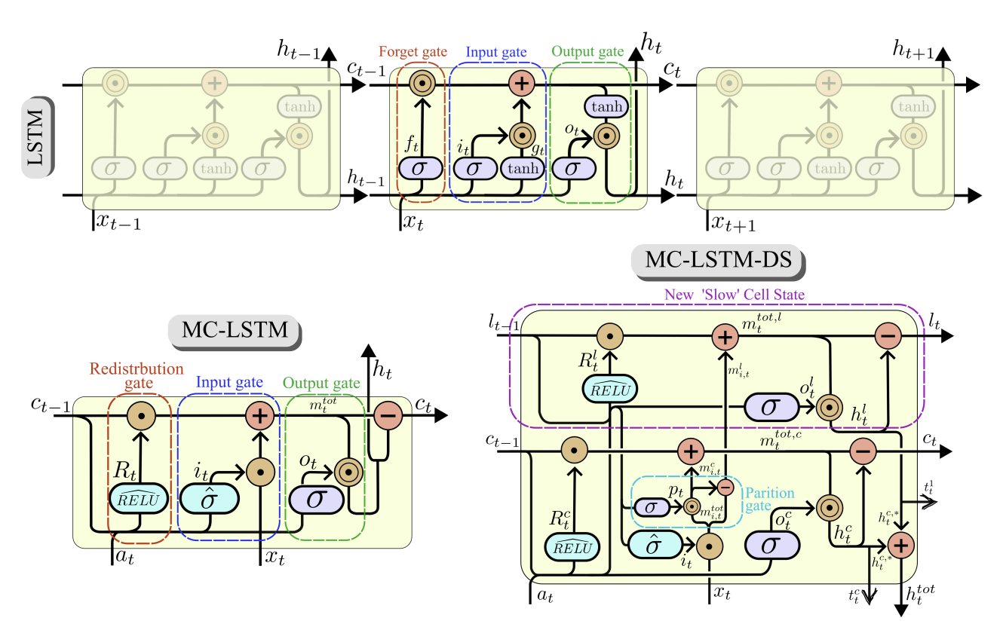

Research Overview
While deep learning models show high predictive capability in hydrology, they frequently lack physical consistency and interpretability. This research introduces the Mass-Conserving Long Short-Term Memory with Dual States (MC-LSTM-DS) architecture. The model is designed to explicitly separate short- and long-term hydrological memory by enforcing strict mass balance constraints within the neural network's internal structure.
Architecture & Technical Specifics
The architecture moves beyond "black-box" regression by treating hidden states as physical storage reservoirs:
- Dual-State Mechanism: Introduced a second cell state to complement the original memory unit. Internal investigations confirm that the additional state captures slow storage and release processes such as groundwater and subsurface flow, while the original state represents fast-flow components like surface runoff.
- Gating & Mass Balance: Utilized specialized redistribution and partitioning gates to allocate incoming rainfall between short-term and long-term storage. These mechanisms ensure that the water balance is strictly maintained at every temporal step.
- Hydrological Interpretability: Investigation of internal states and mechanisms proves that the model successfully captures signatures of distinct runoff-generating processes, specifically infiltration-excess and saturation-excess overland flow across varying climates.
Cross-Regional Evaluation
The framework was benchmarked against standard sequential models across 158 basins in India (CAMELS-IND) and 531 basins in the United States (CAMELS-US). Results demonstrate that the dual-state architecture effectively mitigates the performance trade-offs inherent in strict mass conservation, achieving state-of-the-art results in Kling-Gupta Efficiency and high-flow bias across diverse hydro-climatic settings.